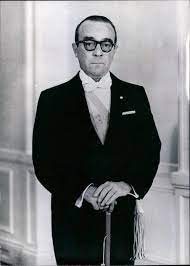

Golpes de Estado
Golpe de Estado de 1962
La Unión Cívica Radical Intransigente celebraría el triunfo de su candidato Arturo Frondizi, gracias al pacto que tuvo con Perón para conseguir los votos peronistas.
Asumiría al poder el 1 de mayo de 1958.
Su periodo de gobierno se caracterizó por adoptar el desarrollismo como política básica de gobierno, a partir de las recomendaciones de la CEPAL y las
definiciones de la llamada teoría de la dependencia, desarrollada a partir de los años de 1950 por intelectuales de toda América Latina. Sin embargo, el desarrollismo frondizista se
diferenció del cepaliano al recurrir principalmente a la radicación de empresas multinacionales, antes que al Estado, como factor de impulso del desarrollo industrial.
La orientación general de la política económica de Frondizi siguió los lineamientos del desarrollismo, según las recomendaciones que la Cepal había empezado a sugerir en esa década a los gobiernos latinoamericanos, pero a través del enfoque particular elaborado por Rogelio Frigerio.
Al asumir Frondizi, la economía argentina padecía una severa restricción externa, causada por el fuerte déficit de su balanza comercial, que le impedía contar con las divisas necesarias para importar los insumos que precisaba el tejido industrial. Una parte sustancial de ese déficit se
debía a las importaciones de petróleo. Por eso en 1956, Frondizi comenzó a abandonar la postura de su libro Petróleo y política, y pensó que los contratos petroleros con industrias del extranjero podían constituir una solución al déficit energético.
La política de radicación de capitales extranjeros (cuyas medidas principales fueron las leyes de inversiones extranjeras directas, promoción industrial y los contratos petroleros) tuvo éxito al coincidir con la etapa de gran expansión transnacional que tuvieron las empresas estadounidenses en aquella época.
Entre 1958 y 1963 se llegó a alcanzar el máximo histórico de las inversiones extranjeras en Argentina: alrededor del 23 % del total del período entre 1912 a 1975. Las ramas industriales privilegiadas en esta segunda etapa del proceso de sustitución de importaciones fueron la automotriz, la petrolera y petroquímica, la química, la metalúrgica y la de
maquinarias eléctricas y no eléctricas. Las inversiones se orientaron hacia el aprovechamiento de las posibilidades que ofrecía un mercado interno protegido.
Con el fin de promover la industrialización acelerada del país, alentó el ingreso del capital industrial extranjero. Profundizó en la política petrolera de apertura al capital extranjero, impulsada por Perón desde 1952.
El gobierno de Frondizi sufrió grandes presiones por parte del poder militar, puesto que llegó a padecer veintiséis asonadas militares y seis intentos de golpe de Estado.
Con los paros de empleados públicos, obreros y sindicatos en la oposición, ante elecciones cada vez más próximas, Frondizi decidió a dar un vuelco y admitir una relativa participación del peronismo, a través de partidos alternativos o neoperonistas (Unión Popular, Partido Laborista, Tres Banderas, etc.). Dispuso entonces que las elecciones nacionales
legislativas se realizaran el 18 de marzo de 1962, coincidiendo con algunas elecciones provinciales para gobernador, entre ellas el de la crucial provincia de Buenos Aires.
Los militares querían que el presidente anulara las elecciones para que el peronismo no tuviera así ningún diputado ni senador en el Congreso; para evitar esto, Frondizi intentó realizar una maniobra e intervino en cinco provincias (todas las ganadas por el peronismo menos Neuquén), con la idea de quitar los gobernadores peronistas electos, pero no
anular las elecciones, como le exigían los militares.
Fue derrocado el 29 de marzo de 1962 y fue detenido por miembros de las Fuerzas Armadas. Sería trasladado primero al sur para luego quedar recluido en la Isla Martín García. Lo sustituyeron por José María Guido.

José María Guido
Fue un abogado y político argentino, presidente de la Nación Argentina desde el 29 de marzo de 1962 hasta el 12 de octubre de 1963, tras haber asumido el Poder Ejecutivo con homologación de la Corte Suprema gracias a la Ley de acefalía presidencial como resultado del golpe de Estado de 1962.
Guido tenía dudas porque no estaba seguro de que Frondizi estuviera de acuerdo con el plan y lo último que deseaba era traicionarlo, pero igualmente pidió consejo a los líderes partidarios, que fueron unánimes en apoyar el plan. Finalmente Guido aceptó y, renunció al partido y dio la orden de preparar la nota a la Corte solicitando que se le recibiera juramento para asumir la Presidencia “por la vacancia del Poder Ejecutivo producida por la destitución de hecho del anterior Presidente”.
Durante su breve gobierno, se produjeron los enfrentamientos armados entre los dos sectores en que se dividieron a las Fuerzas Armadas argentinas luego de derrocar al Gobierno constitucional de Juan Domingo Perón,
conocidos como Azules y Colorados. Sin estar facultado y bajo presión militar, declaró «en receso» al Congreso de la Nación, para ejercer también el poder legislativo nacional y, también disponer la intervención federal de las provincias que aún no estaban
intervenidas para asumir los poderes ejecutivos y legislativos de las mismas.
Para haber sido presidente de la Nación, Guido es una de las figuras menos estudiadas por la historiografía argentina, en gran medida debido a lo corto y convulsionado de su período de gobierno, como al hecho de que su accionar controvertido condujo a que prácticamente ningún sector político reivindicara su figura con posterioridad.
Los historiadores coinciden en que el gobierno de Guido no fue un gobierno constitucional, pero discrepan en cuanto a la caracterización estricta del mismo.